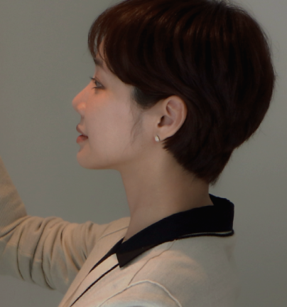
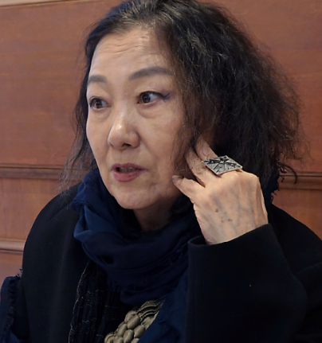

월간 을터뷰
을유문화사에서 만난 사람들의 이야기-

화가
홍지희어느 날 길을 걷다가 무언가 반짝거려서 들여다봤는데 그게 폐유리병이었어요. 부서진 유리를 보고 누군가는 희망의 빛을 발견하는 중의적인 표현에 매료되었어요.
자세히보기 -
한국외대교수
신근혜모든 인물에 공감이 가요. 제가 10년 전쯤 이 책을 처음 읽었고, 그 후 번역 작업을 하면서 여러 번 반복해서 읽었는데 그때마다 감정이 조금씩 달라지면서 어느 한 사람에게만 공감이 가지는 않더라고요.
자세히보기 -

시인
문정희시를 쓰는 순간만이 가장 내가 완벽해진다는 느낌이 들어요. 시라는 게 나이가 든다고 권위가 생기고 쓰는 능력이 느는 게 아니더라고요. 다시 새로움이에요.
자세히보기